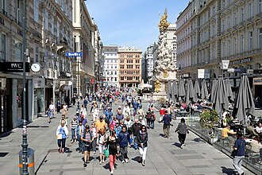
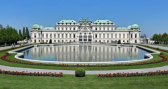
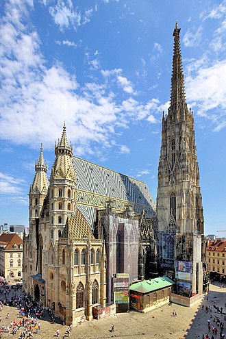
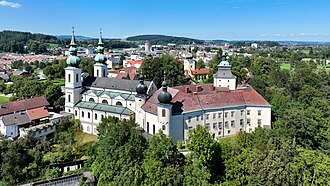
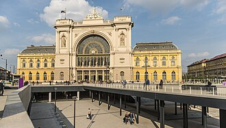
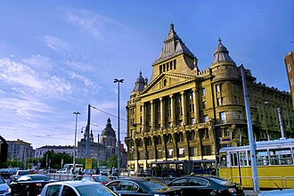
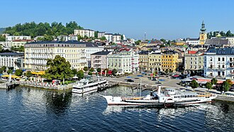
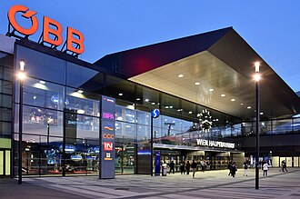

10/27（周二）布达佩斯 → 维也纳 → Bad Ischl
⚠ 排得下（有风险点） 作息：早起（赶早车）。默认坐 07:30 那班；想在维也纳多玩 1 小时就坐 06:30
- ✅排得下：坐 07:30 + 15:57，维也纳约 5 小时（10:20–15:45）
- ⚠IC 一定要订座；19:00 以后入住要房东确认（K-7）
今天去哪
Keleti → Wien Hbf（存包）→ 美景宫上宫 → 老城（斯蒂芬大教堂、Graben）→ 回 Hbf 取包 + 买菜 → 火车去 Bad Ischl
必须卡的时间点
| 时间 | 要做的事 |
|---|---|
| 06:30 或 07:30 | Budapest-Keleti 开车：RJX 162 06:30→Wien Hbf 09:18 / RJX 60 07:30→10:20（直达） |
| 15:57 或 16:57 | Wien Hbf 开车（D-101 二选一）；⚠ Scotty 标注“Starker Reisetag”，不订座不保证有位 |
| 最迟 15:45 | 取包 + Interspar 买当晚和第二天早饭（Interspar 06–23） |
| 19:00 / 20:00 | 到 Bad Ischl（15:57 班 / 16:57 班） |
| 约 19:25 / 20:25 | 到 Donna Lea（入住时间 16:00 起；⚠ K-7：晚到要房东同意自助入住） |
今天的安排（默认组合）
Keleti → Wien Hbf（存包）→ 美景宫上宫 → 老城（斯蒂芬大教堂、Graben）→ 回 Hbf 取包 + 买菜 → 火车去 Bad Ischl
这个组合会去的地方（图片，13 处）





（城镇实景）



（城镇实景）


圆形图是公开实拍（维基百科或维基共享，须有坐标且离地点近）。没有核对上的地点不放字母圆标。小红书截图不放上来。
小红书出处（方便搜原帖；有题目写题目，没有题目写大致内容和作者。截图本身不放上来）：
- Graben / Kohlmarkt / Ringstraße 歌剧院一带：《🇦🇹维也纳1天行程安排》 · 作者 我是徐徐徐
- Graben / Kohlmarkt / Ringstraße 歌剧院一带：《维也纳一日游｜老城Citywalk路线✨》 · 作者 小C攻略
- Stephansdom 圣斯蒂芬大教堂：《维也纳 | 超详细绝美出片教堂徒步指南》 · 作者 Julia
- Bad Ischl Bahnhof：《🇦🇹 奥地利湖区三天两晚胚胎级攻略》 · 作者 fifi
- Budapest-Keleti：《维也纳当天往返布达佩斯懒人玩法（3月版）》 · 作者 从不说早安
可以去的地方（大概多久）
| 地方 / 活动 | 大概多久 |
|---|---|
| 美景宫上宫（每天 09–18，要买时段票，学生 €19） | 2 小时 |
| 斯蒂芬大教堂（正式参观 13:00–16:30 €8；入口区免费；南塔 343 级） | 1 小时 |
| 老城午饭（见地图 🍴） | 1 小时 |
| Graben / Kohlmarkt 散步 | 30 分钟 |
| 🧗 本人 可选：boulderbar Hauptbahnhof（周二 09–23，离 Hbf 步行 11′） | 1.5–2 小时（替代老城部分） |
真实交通时刻
- M2 Deák → Keleti 4′（05:40、05:45 … / 06:40 左右）
- Wien Hbf Ost → 电车 O → Schloss Belvedere 5′（09:34、09:42、09:49、09:57 …）+ 步行 3′
- Schloss Belvedere → 电车 D → Stephansplatz 约 17′（12:02、12:09、12:17 …）
- U1 Stephansplatz → Wien Hbf 5′（14:33、14:37、14:40 …）
- 15:57 IC → Attnang-Puchheim 17:58 → R70 18:05 → Gmunden 18:20 → SV170 18:23 → Bad Ischl 19:00
- 16:57 IC → Attnang 18:58 → R70 19:05 → Gmunden 19:19 → SV170 → Bad Ischl 20:00
- Bad Ischl Bahnhof → Donna Lea 步行 1.5 km 21′（拉箱子约 25′）
这天还没定 / 待核实（2）
- 10/27 车次 （D-101）
- 冲突：10/27 到达时间 vs 16:00 入住 （K-7）
这天全部地点的图片（13 处）
（城镇实景）
（城镇实景）
圆形图是公开实拍（维基百科或维基共享，须有坐标且离地点近）。没有核对上的地点不放字母圆标。小红书截图不放上来。
小红书出处（方便搜原帖；有题目写题目，没有题目写大致内容和作者。截图本身不放上来）：
- Graben / Kohlmarkt / Ringstraße 歌剧院一带：《🇦🇹维也纳1天行程安排》 · 作者 我是徐徐徐
- Stephansdom 圣斯蒂芬大教堂：《维也纳 | 超详细绝美出片教堂徒步指南》 · 作者 Julia
- Bad Ischl Bahnhof：《🇦🇹 奥地利湖区三天两晚胚胎级攻略》 · 作者 fifi
- Budapest-Keleti：《维也纳当天往返布达佩斯懒人玩法（3月版）》 · 作者 从不说早安
这天涉及的地点
- Oberes Belvedere 美景宫上宫（克里姆特《吻》） 每日 09:00–18:00；需定时票。紧邻Hbf（O/18路电车2–3 min）→ 适合27日到站后
- Stephansdom 圣斯蒂芬大教堂 教堂入口区 周一–六 06:00–22:00 免费；正式参观 周一–六 09:00–11:30、13:00–16:30 €8；南/北塔每日 09:00–19:00；地下墓穴导览 10:00–16:30 多场
- Graben / Kohlmarkt / Ringstraße 歌剧院一带 全天（户外）
- boulderbar Hauptbahnhof 周一–五 09:00–23:00；周六日/节假日 09:00–22:00 → 周二27: 09–23；周六31: 09–22
- Wien Hauptbahnhof Tamburi/ÖBB 储物柜 车站营业时间内可用；可网上预订或现场
- Donna Lea House（Airbnb，10/27–29 三晚） 入住16:00起，退房10:00前（Google/upper-austria-hotels）
- Deák Ferenc tér（100E 终点）
- Budapest-Keleti（10/27 早车）
- Wien Hauptbahnhof
- Interspar Pronto（Wien Hbf，每天 06–23）
- Attnang-Puchheim（换车）
- Gmunden Bahnhof（换 SV170 替代巴士）
- Bad Ischl Bahnhof